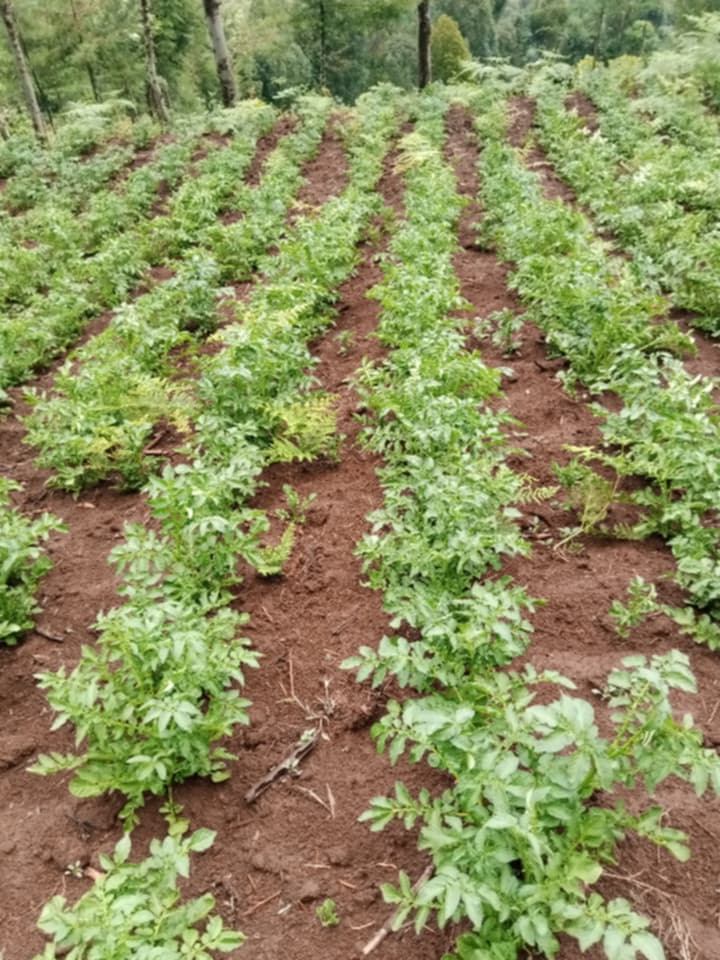

Importance of Keeping Farm Records
Published on

Keeping farm records is important because it helps farmers monitor their crops, livestock, expenses, and farm activities. Good records can also help farmers make better decisions.
Published on

Keeping farm records is important because it helps farmers monitor their crops, livestock, expenses, and farm activities. Good records can also help farmers make better decisions.